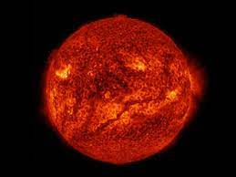
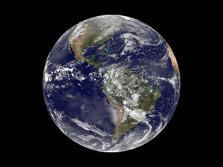

The sun's mass accounts for approximately 99.86% of the mass in the solar system. Most of it composed of hydrogen and helium. These gases make up an almost perfect sphere. With only a 10 km difference between the polar and equator diameters. The star is going to enlarge to such a scale, where it absorbs our planet.
Mercury, being the sun's closest sibling in the solar system, is also the smallest, whilst it is still shrinking. It is also known for being quite the meteor attractor. Possessing the most craters in the solar system. In its largest, it could fit the whole of Western Europe. Its temperature can vary on a broad scale.

Radius - 2,439.7 km
Mass - 3.3 × 10^23 kg
Age - 4.5 billion years
Gravity - 3.7 m/s²
Length of day - 58 days
Surface temperature - 179 °C
Venus is an outcast when it comes to direction. It spins the opposite way from other planets. The atmosphere accommodates to this by spinning faster than the planet. It is also theorized that the atmosphere could possibly contain life. Life in form of microbial terms. Venus is warmed by the Greenhouse Effect.

Radius - 6,051.8 km
Mass - 4.8 × 10^24 kg
Age - 4.5 billion years
Gravity - 8.87 m/s²
Length of day - 117 days
Surface temperature - 475 °C
The earth is portrayed as a round planet. But far from perfect. Its sphere is a little rigged when it comes to roundness. This is exacerbated even more. Due to the melting glaciers. This also applies to the gravity. The Earth's gravitational field is uneven. Earth, is the only known planet to inhabit concius life.
Radius - 6,371 km
Mass - 5.9 × 10^24 kg
Age - 4.5 billion years
Gravity - 9.81 m/s²
Length of day - 24h
Surface temperature - 13.9 °C
Distance to earth - 0 km
The planet serves somewhat of a chance for potential life. In some areas of the planet. There's ice embedded in the ground. This has led some scientists to believe that there could be life underneath Mars. The temperature on the planet, is a little hot, but doesn't meet the extremes of other planets.

Radius - 3,389.5 km
Mass - 6.4 × 10^23 kg
Age - 4.6 billion years
Gravity - 3.72 m/s²
Length of day - 1 day 37 min
Surface temperature - 60 °C
Talk about getting dizzy. Jupiter is the fastest spinning planet (12.6 km/s). The giant has clouds for its outer layer. They span over 50 km in thickness. The most eye-catching feature, is its "eye". The hurricane has been there since the 17th century. Diameter wise, it is 24,000 km and its hight is 12-14,000 km.

Radius - 69,911 km
Mass - 1.9 × 10^27 kg
Age - 4.6 billion years
Gravity - 24.79 m/s²
Length of day - 10h
Surface temperature - (-110°C)
The furthest visible planet to the eye. The name, comes from the Roman god Saturnus. It is also the flattest planet in the solar system. It is so, due to the polar diameter being 90% of its equatorial diameter. The rings are made out of globs of ice and carbonaceous dust. The rings are only 20 meters thick!

Radius - 58,232 km
Mass - 5.7 × 10^26 kg
Age - 4.5 billion years
Gravity - 10.44 m/s²
Length of day - 10h 42 min
Surface temperature - (-140°C)
Uranus, the first planet discovered after the invention of the telescope. It will make you shiver in your timbers. In other words, it is the coldest planet in the solar system. Uranus also has a pair of rings. They are made of dark particles. The particles span from micro meters to a fraction of a meter.

Radius - 25,362 km
Mass - 8.7 × 10^25 kg
Age - 4.5 billion years
Gravity - 8.87 m/s²
Length of day - 17h 14 min
Surface temperature - (-195°C)
Neptune possesses the strongest winds in the solar system. These winds go up to 2100 km/h. As other planets, it has rings. For being an ice giant, it is the smallest of this category. The planet's atmosphere is made out of hydrogen, helium and methane. It is also very earth like in gravity.

Radius - 24,622 km
Mass - 1.0 × 10^26 kg
Age - 4.5 billion years
Gravity - 11.15 m/s²
Length of day - 16h 6 min
Surface temperature - 426 °C
Similarly to Saturn. It received its name from a Roman god. Pluto's mass consists 1/3 of water. The dwarf is smaller than our moon. It is debated whether it is a planet or not. Throughout the years, it has been classified and declassified as a planet. One of its moons (Charon) might have an ocean on it.
Radius - 1,188.3 km
Mass - 1.3 × 10^22 kg
Age - 4.6 billion years
Gravity - 0.62 m/s²
Length of day - 6.4 days
Surface temperature - 233 °C